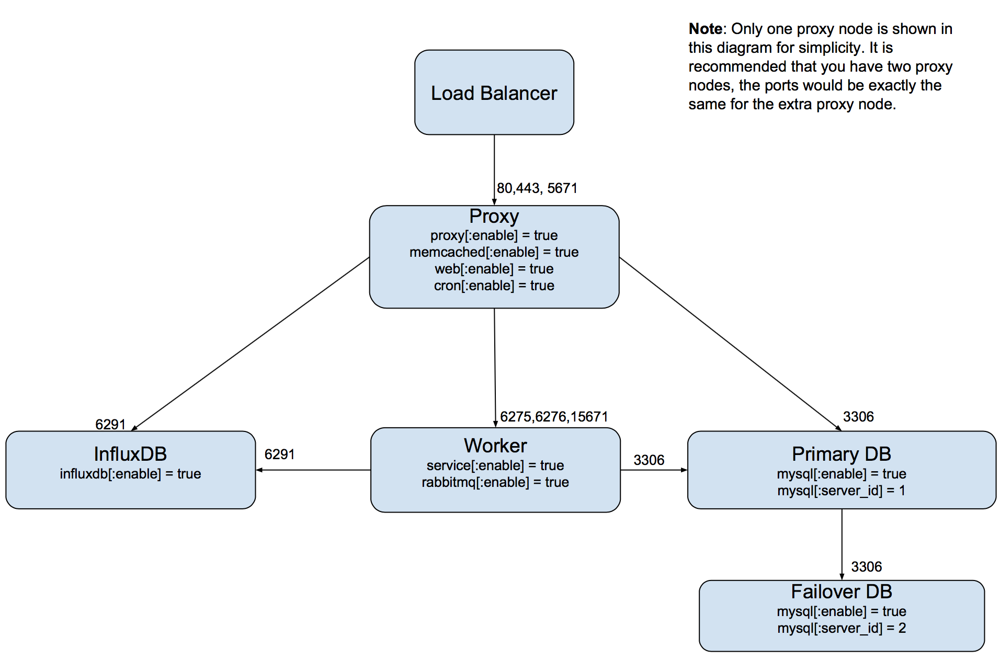

Scalr Server Architecture and Requirements¶
Architecture¶
Scalr’s architecture consist of 7 modules (Proxy, App, Session, RabbitMQ, Worker, InfluxDB, Main DB, and Cost Analytics DB). The recommended Scalr HA deployment consists of 6 VMs (Instances) and is outlined in the following diagram:
It is completely acceptable to group multiple components onto one virtual machine as the load for these services are minimal. The following are the recommended specs for the initial configuration:
- Load Balancer of choice. The target should be the Scalr servers over 80 or 443 and 5671.
- 1 VM for the Worker:
- 4CPU, 8GB RAM
- 100GB storage mounted on /opt/scalr-server on each server
- NOTE: Worker should only be enabled on one server.
- 1 VM for InfluxDB:
- 4CPU, 16GB RAM
- 100GB storage mounted on /opt/scalr-server on each server
- 2 VMs for Proxy, Sessions, and App:
- 4CPU, 8GB RAM
- 100GB storage mounted on /opt/scalr-server on each server
- 2 VMs for DB (active/passive):
- 4CPU, 8GB RAM
- 750GB storage mounted on /opt/scalr-server on each server
Supported Operating Systems:¶
- RedHat Enterprise Linux 6.x or 7.x
- Centos Linux 6.x or 7.x
- Debian 7.x or 8.x
- Ubuntu 14.04 or 16.04
Network Requirements¶
See the list below or the architecture diagram above:
| Port | Protocol | Direction | Usage |
|---|---|---|---|
| 80 | TCP | Cloud Instance > Scalr Server | Scalarizr Agent |
| 443 | TCP | Cloud Instance > Scalr Server | Scalarizr Agent |
| 5671 | TCP | Cloud Instance > Scalr Server | Scalarizr Agent (rabbitmq) |
| 6275 | TCP | Between Scalr Server Nodes (excluding DB) | RabbitMQ |
| 6276 | TCP | Between Scalr Server Nodes (excluding DB) | RabbitMQ |
| 6291 | TCP | Between Scalr Server Nodes (excluding DB) | InfluxDB |
| 8008 | TCP | Scalr Host > Cloud Instance | Scalarizr Agent (update service) |
| 8009 | TCP | Scalr Host > Cloud Instance | Reserved, not used at this time |
| 8010 | TCP | Scalr Host > Cloud Instance | Scalarizr Agent (API) |
| 8011 | TCP | Scalr Host > Cloud Instance | Reserved, not used at this time |
| 8012 | TCP | Scalr Host > Cloud Instance | Reserved, not used at this time |
| 8013 | TCP | Scalr Host > Cloud Instance | Scalarizr Agent (control) |
| 15671 | TCP | Between Scalr Server Nodes (excluding DB) | RabbitMQ |